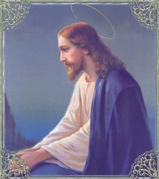
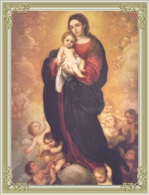
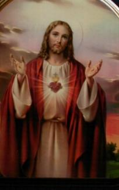
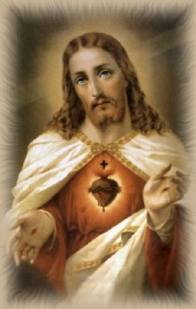
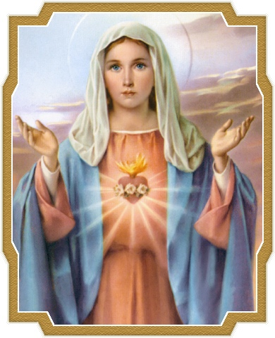
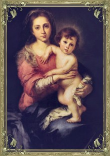

"APELOS DA MENSAGEM"
(2ª Parte)
10 – Décimo: APELO À REZA DIÁRIA DO TERÇO.
NOSSA SENHORA recomendou aos três
pequenos pastores: “Rezem o Terço
todos os 
A reza do Terço ou do Santo Rosário, pela origem e sublimidade das preces que o compõem, é uma das orações mais agradáveis ao SENHOR e de admirável proveito à alma do fiel, porque enseja recordar em cada dezena os Mistérios da Redenção, realçando os acontecimentos e sublinhando um convite de fidelidade ao Amor de DEUS. Por isso mesmo, NOSSA SENHORA o recomenda com insistência em todas as Aparições, e nos faz compreender que aquela advertência aos três pequenos pastores é também dirigida a todas as gerações. Isto porque, na verdade, diante de NOSSA SENHORA, os três pequenos pastores representavam à humanidade, e ali, a VIRGEM MARIA se empenhou em nos alertar sobre a grande necessidade de cada pessoa rezar, colocando-se em contato com DEUS através de qualquer oração, mas, sobretudo e primordialmente, com fé, esperança e amor.
“Na Aparição do dia 13 de Junho de 1917, NOSSA SENHORA trouxe na palma da mão direita um coração cercado de espinhos. Compreendemos que era o Imaculado Coração de Maria, ultrajado pelos pecados da humanidade, que pedia reparação”, disse a Irmã Lucia.
Sabemos que o coração é o símbolo do amor e da dor, é o receptáculo da misericórdia e do perdão. É este amor transbordante que faz os pais correr atrás dos filhos errantes, saídos da casa paterna para se enveredarem em aventuras perigosas, perdidos por caminhos ignóbeis. Quando os filhos arrependidos retornam ao lar, os pais experimentam a felicidade do reconhecimento, do amor e lhes concedem o perdão.
Esta é a melhor e a primeira reparação que DEUS e NOSSA SENHORA pedem a cada um de seus filhos perdidos nos seus próprios erros, transviados por caminhos tortuosos, enganados e iludidos na busca do prazer efêmero e que lhe degrada: o sincero arrependimento pelos pecados cometidos e a busca decidida do caminho da conversão.
No PORTAL DO APOSTOLADO DOS SAGRADOS CORAÇÕES, temos um Site "O TERÇO DE NOSSA SENHORA" que ensina a reza do Terço e informa sobre a sua origem e a instituição, realçando a sua trajetória na história e os benefícios que ele proporciona a todos que praticam as suas orações.
http://www.apostoladosagradoscoracoes.com/
11 – Décimo Primeiro: APELO À DEVOÇÃO AO CORAÇÃO IMACULADO DE MARIA.
Foi na segunda Aparição, no dia 13 de Junho que NOSSA SENHORA disse aos pastorinhos: “JESUS quer estabelecer no mundo a Devoção ao meu Imaculado Coração”. Estabelecer no mundo a Devoção ao Coração Imaculado de MARIA significa levar as pessoas a uma plena consagração, que implica na conversão do coração, numa plena doação e estima, com veneração e amor.
Todos sabem o que numa família representa o coração da mãe. È o amor! É o amor que leva a mãe a desvelar-se junto ao berço do filho, a sacrificar-se, a esgotar-se em cuidados, a correr em defesa de sua criança. Por isso mesmo, todos os filhos confiam no coração da mãe, porque sabem que lá existe um lugar de íntima predileção. O mesmo acontece com a VIRGEM MARIA. Conversando com os três pequenos pastores NOSSA SENHORA disse: “O meu Imaculado Coração será o teu refúgio e o caminho que te conduzirá a DEUS”. Assim sendo, o Coração de MARIA é, portanto, para todos os seus filhos, para os pequenos pastores e para nós, o refúgio e o caminho para DEUS.
NOSSA SENHORA revelou que DEUS quer a instituição da Devoção ao seu Imaculado Coração, através da Comunhão Reparadora. As pessoas deverão se Confessar, mas se estiverem em estado de graça, deverão comungar no primeiro sábado de cada mês, durante cinco meses seguidamente, sem interrupção, rezar um Terço e fazer 15 minutos de adoração ao Santíssimo Sacramento ou 15 minutos de reflexão sobre os Mistérios do Rosário, para consolo e desagravo de todas as maldades, ofensas e pecados que diariamente são cometidos contra o Imaculado Coração de MARIA. Aqueles que acolherem esta solicitação, não morrerão em pecado mortal e na hora da morte, receberão a visita consoladora da MÃE DE DEUS.
12 – Décimo Segundo: APELO À OBSERVÂNCIA DOS MANDAMENTOS.
A Mensagem trazida pelo Anjo e pela VIRGEM MARIA, é também uma Mensagem de “Paz”, convidando as pessoas a terem presente e bem gravadas no coração a Lei de DEUS, porque são os Mandamentos Divinos “que marcam o nosso caminho para o Céu”. “Se queres salvar-te,” disse JESUS ao jovem que o interrogava, “guarde os Mandamentos”. (Mt 19,17)
No Antigo Testamento, no Livro do Deuteronômio, lemos o que DEUS disse a seu povo, depois de lhes ter dado os Mandamentos no Monte Sinai: “Honra teu pai e tua mãe, conforme DEUS te ordenou, para que teus dias se prolonguem e tudo te corra bem... Não matarás; não cometerás adultério; não roubarás; não apresentarás um falso testemunho contra o teu próximo; não cobiçarás a mulher do teu próximo, nem desejará para ti a casa do teu próximo, nem o seu campo..., ou qualquer coisa que pertença ao teu próximo”... “Estas palavras que hoje te ordeno estejam (gravadas) em teu coração! Tu as ensinarás aos teus filhos, e as meditarás sentado em tua casa e andando pelos caminhos, e estando no leito, e ao levantar-te. Tu as atarás também à tua mão como um sinal, e elas estarão como um frontal diante dos teus olhos; tu as escreverás nos umbrais e sobre as portas da tua casa. (Dt 5, 16-21) (Dt 6, 6-9)
O SENHOR se preocupa em manter presente
no coração da humanidade o conteúdo 
A falta de acolhimento e da observância dos Mandamentos de DEUS abre espaço ao maligno que promove os perversos e graves males na Humanidade, representados pelos desastres, catástrofes, violências e todos os abomináveis crimes.
A humanidade nasceu do Amor de DEUS e foi criada para amar; amar o CRIADOR em primeiro lugar e amar o próximo com a mesma intensidade, por amor a DEUS.
Na Lei do SENHOR, o amor é o primeiro e o último Mandamento, motivo porque toda a Lei, ou seja, todos os Mandamentos devem ser obedecidos sem faltar a nenhum deles, se verdadeiramente a criatura não quer faltar ao Mandamento do amor com DEUS e para com o próximo.
O cumprimento da Lei de DEUS proporciona ao fiel uma alegria incomparável, traduzida pela satisfação do dever cumprido e por um júbilo incomensurável que transmite uma profunda paz interior.
13 – Décimo Terceiro: APELO AO APOSTOLADO.
A Quarta Aparição de NOSSA SENHORA aos três pequenos aconteceu no domingo dia 19 de Agosto de 1917, por motivo de uma série de ocorrências que impediram as crianças de estarem na Cova da Iria no dia 13, conforme a solicitação da VIRGEM MARIA.
A MÃE DE DEUS falou: “Rezai, rezai muito e fazei sacrifícios pelos pecadores, que vão muitas almas para o inferno por não haver quem se sacrifique e peça (reze) por elas”.
A Mensagem estimula que exercitemos um “apostolado” em beneficio dos irmãos. Isto porque, o “apostolado” é a continuação da Missão de JESUS na Sua admirável Obra Redentora, para a salvação de todas as almas. Existe o “apostolado da oração”, sobre o qual deve assentar todo tipo de apostolado, para ser eficaz e fecundo, porque é justamente através da oração que entramos em união de amor com o SENHOR. Existe o “apostolado do sacrifício”, daqueles que se imolam, renunciando a si próprio, pelo bem do irmão. Há também o “apostolado da caridade”, que procura viver a vida de CRISTO por sua entrega a DEUS ao serviço do próximo. E também, existe o “apostolado da impressa ou da comunicação”, que objetiva ensinar e instruir o próximo com a Verdade Divina. Esta realidade nos permite afirmar, que todo "apostolado" é bom, profícuo e benéfico, desde que, fundamentado na oração.
Pouco antes de SE entregar à morte, JESUS disse a Seus Discípulos: “Permanecei em MIM e EU permanecerei em vós”... “... porque, sem MIM, nada podeis fazer”. (Jo 15, 4.5) Estas palavras significam que é pela oração que o nosso "apostolado" há de frutificar, porque é justamente pela oração que estamos unidos ao SENHOR; sem ela, nada podemos fazer!
14 – Décimo Quarto: APELO A PERSEVERAR NO BOM CAMINHO.

Na Aparição do dia 13 de Julho, NOSSA SENHORA mostrou o Inferno aos pastorzinhos, para que eles presenciassem a existência do mesmo. Isto porque, muitas pessoas não acreditam que existe o Inferno! Contudo, as crianças ao vê-lo, ficaram verdadeiramente impressionadas e apavoradas. Viram homens e mulheres, jovens e velhos, se debatendo num mar incandescente, devorados pelas chamas eternas. Davam gritos terríveis e vociferavam abomináveis imprecações.
A Irmã Lúcia falou: Não sei se foi para fazer-nos compreender mais e melhor a necessidade que temos de oferecer ao SENHOR orações e sacrifícios pela conversão dos pecadores, que NOSSA SENHORA mostrou-nos o inferno, ou talvez também, porque Ela já sabia que nos tempos futuros e modernos, esta verdade viria a ser negada ou posta em dúvida.
Mas o inferno existe, é uma realidade que pode ser comprovada em diversas passagens do Evangelho. JESUS fala dele e acrescenta que para lá irão àqueles que não praticarem o Mandamento do Amor: “Afastai-vos de MIM, malditos, (vão) para o fogo eterno que está preparado para o diabo e para os seus anjos”. (Mt 25, 41)
A Irmã Lúcia explica: “Na visão do inferno, que NOSSA SENHORA mostrou aos pastorinhos, via-se fogo, mas não sei que classe de fogo era aquele. Por certo que não era um fogo material (de madeira, de óleo combustível, gás, etc.), como aqueles que estamos habituados a ver. Na esfera do sobrenatural não existe matéria”. A Irmã Lucia lembrou também o Sistema Solar: “O Sol, há tantos milhares e milhares de anos que foi criado por DEUS e colocado na sua órbita, seguindo sempre a mesma rotação, com o mesmo calor, luz e vida, que transmite aos seres sobre a Terra! De que matéria se sustenta tal fogueira, ardendo sempre sem se gastar, sem se extinguir”? (fica evidente que se trata de labaredas de um fogo diferente, sem dúvida, de um fogo sobrenatural) “Não sabemos quantos outros "Fogos" foram criados por DEUS na esfera do sobrenatural, cada um deles apropriado à finalidade que o SENHOR Mesmo determinou”. Assim, podemos acreditar que o fogo do inferno é também um fogo diferente, porque é um fogo sobrenatural inventado por DEUS, para punir pela Justiça Divina, as gerações que não cultivam o Mandamento do Amor.
JESUS falando do inferno, diz que ali há pranto e ranger de dentes. “O que parece significar o fogo da raiva, do desespero, do ódio, do espírito de vingança, etc.”, explica a Irmã.
Então, sem qualquer dúvida, o inferno existe e ele, é para NOSSA SENHORA assunto de grande preocupação, principalmente quando Ela se refere a salvação de toda humanidade. Por isso mesmo, na Mensagem de Fátima, Ela pede muitas orações e sacrifícios pela conversão dos pecadores: “Vistes o inferno, para onde vão as almas dos pobres pecadores. Para salvá-las, DEUS quer estabelecer no mundo a Devoção a Meu Imaculado Coração”.
Sim, o CRIADOR quer servir-se Dela como MÃE do povo de DEUS, porta do Céu, como disse a Irmã Lucia, refúgio dos pecadores que a Ela recorrem com fé, esperança e amor, para que por Sua intercessão junto a DEUS alcance a graça do perdão para aqueles que, sinceramente arrependidos, o supliquem, e assim também, a graça da conversão do coração. NOSSA SENHORA disse: “Se fizerem o que Eu vos disse, salvar-se-ão muitas almas e terão paz”.
A propósito da forte impressão que o Inferno lhe causou, a Irmã Lúcia escreveu numa carta ao Bispo de Leiría: "Esta visão foi só num momento, e graças à nossa boa MÃE CELESTE, que antes nos tinha prevenido com a promessa de nos levar para o Céu. Se assim não fosse, creio que teríamos morrido de susto e pavor".
Ela explica na carta, o Inferno é formado por um imenso mar de chamas onde os condenados flutuam e suas almas pecadoras são devoradas pelas labaredas eternas de um fogo sobrenatural, queimando e elevando-se como fagulhas de um grande incêndio.
O demônio procura arrastar-nos pelo caminho do pecado, a fim de nos fazer escravos no tempo e na eternidade. A Irmã Lucia escreve: Além das tentações do Demônio, temos também as tentações do mundo que nos rodeia, que nos sugestiona e nos ilude com ganância. Muitas vezes somos iludidos e enganados pelas vozes do mundo. O mundo nos fala de vaidades, riquezas, honras, modas, etc. Levado por estas vozes, faz nascer nas pessoas, o desejo de subir, de parecer gente de bem, de atrair as atenções, ser cumulado de honras, de possuir riquezas, ser considerado sábio, ocupar os primeiros lugares, mesmo que haja injustiça e falta de caridade. Estas são as tentações do mundo que cegam e obscurecem o entendimento. Por isso, JESUS pensando naqueles que se esforçam em manter-se fieis à Sua Palavra e as Suas Graças, lutando para vencer as tentações, rezou ao PAI ETERNO:“EU rogo por eles; não pelo mundo, mas por aqueles que ME deste, porque são TEUS... Dei-lhes a TUA Palavra, e o mundo os odiou, porque não são do mundo como EU não sou do mundo. Não peço que os tires do mundo, mas que os livres do mal”. (Jo 17, 9.14-15)
Não são do mundo, porque seguem a palavra de DEUS que é a Verdade, não se deixando arrastar pelas tentações do mundo, que são engano e mentira. Por isso mesmo, a Mensagem também nos sugestiona a permanecer no caminho reto, no bom caminho que nos conduz as bem-aventuranças e a eternidade.
15 – Décimo Quinto: APELO A SANTIDADE PESSOAL.
No dia 13 de Outubro, no momento das notáveis
e impressionantes Manifestações 
JESUS veio ao mundo não só como Redentor, mas também como Mestre, para nos ensinar o caminho que conduz ao PAI: “EU sou o Caminho, a Verdade e a Vida. Ninguém vai ao PAI senão por MIM. Se ME conheceis, também conhecereis a meu PAI”. (Jo 14, 6-7) Ora, conhecendo e seguindo a JESUS, o fiel percorre o Caminho do direito, da justiça e do amor fraterno, que o conduzirá a uma Vida em plenitude e ao conhecimento do CRIADOR. “... Quem ME vê, vê o PAI”... “Não crês que estou no PAI e que o PAI está em MIM? As palavras que vos digo, não as digo por MIM mesmo, mas o PAI, que permanece em MIM é que faz as Obras. Crede-ME: EU estou no PAI e o PAI em MIM. Crede-o ao menos por causa destas Obras”. (Jo 14, 9.10-11)
Como prova de Sua Humanidade e Divindade, JESUS deixou-nos a sua imensa Obra Redentora, revelando ser um Verdadeiro HOMEM Perfeito, ensinando-nos a Sua Doutrina e deixando o Seu admirável exemplo. Instituiu os sete Sacramentos para a nossa Santificação e NOSSA SENHORA nos alertou: “Fazei tudo o que ELE vos (mandar) disser”. (Jo 2, 5) Porque para alcançar qualquer êxito nesta vida e a felicidade eterna é necessário estar com JESUS, e caminhar em direção ao CRIADOR. Ao longo de Sua Vida Pública, JESUS fez uma quantidade incontável de milagres: restituindo a visão a cegos, curando paralíticos e doenças de todos os tipos, libertando pessoas possessas do demônio e inclusive, excedendo em Sua Divina Bondade ao ressuscitar pessoas mortas, provando que ELE estava com DEUS e agia em nome do CRIADOR; foi preso, condenado por um falso e vil Tribunal e morreu crucificado entre dois ladrões, derramando o seu precioso e sagrado Sangue sobre a humanidade, redimindo-nos do Primeiro Pecado e dos Pecados Subsequentes, concedendo-nos o perdão Divino para a nossa Salvação eterna, além de primordialmente consolar o Sagrado Coração do ETERNO PAI; também, deixou-nos MARIA, Sua MÃE, para ser a MÃE ESPIRITUAL da humanidade de todas as gerações, Aquela que intercede, socorre e ajuda a todos os seus filhos que buscam a sua inefável e tão querida proteção.
Por último, na sequência das apariçoes para os três pequenos pastores, apareceu NOSSA SENHORA revestida com a imagem das DÔRES, que naturalmente quis realçar o valor do sofrimento, do sacrifício e da imolação por amor, quando realizado com dignidade por amor a DEUS e ao próximo, por causa de DEUS.
Assim, o modelo do SENHOR e de nossa MÃE SANTÍSSIMA, estão a serviço do PAI CRIADOR que convida especialmente a cada fiel, a ser o filho que ELE gostaria que fôssemos recomendando-nos:
“Sede santos, porque EU, o SENHOR, vosso DEUS, sou Santo”. (Lv 19, 2)
Este é um mandamento que nos obriga cumprir a todos os outros, com empenho e atenção, porque transgredir um só deles já lança manchas sobre a santidade do fiel.
Por outro lado, numa perfeita entrega ao CRIADOR, o nosso tratamento com o SENHOR deve ser simples e permanente, como tratamos o nosso pai, de modo direto, amigo e familiar, comunicando-lhe os nossos desejos, as aspirações, os ideais e as dificuldades do cotidiano com confiança e entrega. È nesta intimidade que DEUS SE dá à cada pessoa e a santifica. Pela fé, a pessoa sabe e tem plena consciência de que ELE a escuta e a conduz pelos caminhos da existência.
A Irmã Lucia escreveu: As pessoas que sabem vencer as tentações mergulham no Ser Imenso de DEUS como num Oceano de Graça, de Força e Amor, procurando penetrar nos segredos Divinos e buscando entende-los, ainda que não possam compreendê-los ao todo. DEUS SE revela a estas almas com certa complacência e comunica-lhes o conhecimento de uma parte de SI Mesmo, segundo a capacidade que ELE Mesmo dá a cada pessoa, para ela alcançar a essência do Ser Divino.
Assim, escolhidos por DEUS para a santidade, devemos procurar corresponder a tal chamamento, com o melhor de nós, para o crescimento pessoal e para o proveito de todos que convivem e desfrutam de nossa existência.
16 – Décimo Sexto: APELO À SANTIFICAÇÃO DA FAMÍLIA.

O CRIADOR quis terminar a Sua Mensagem em Fátima, no mês de Outubro de 1917, com três apelos evidentes e importantes. Depois que a VIRGEM MARIA se despediu e voltou ao Céu, enquanto o povo contemplava atônito, a movimentação do disco solar sob a luz de DEUS, os três pequenos pastores viram ao lado do sol três aparições distintas e muito significativas. A primeira foi à aparição da Sagrada Família: NOSSA SENHORA e o MENINO JESUS nos braços de SÃO JOSÉ. Nestes tempos em que a família, tantas vezes, aparece mal compreendida na sua forma, que sofre com a falta de entendimento e de harmonia entre os casais, numa época em que a vaidade pessoal supera o discernimento e a caridade, não terá DEUS dirigido uma chamada de atenção para o modelo da Sagrada Família de Nazaré?A família foi constituída para cooperar com o SENHOR na obra da criação. Porque DEUS, bondade infinita, quis fazer as suas criaturas participantes de Seu Poder Divino. O CRIADOR confiou à família uma missão sagrada, que faz de dois seres um só, numa unidade tal que entre eles não pode admitir separação, fazendo do Sacramento do Matrimônio um vínculo indissolúvel. É obrigação de cada cristão, procurar viver com energia e vigor esta determinação Divina, ensejando santificar a vida da família em si e em todos os familiares. Por isso mesmo, é necessário que os pais reservem um espaço de tempo para dedicá-lo a seus filhos, numa atitude de preparação, a fim de incutir em cada um deles, desde pequeninos, o conhecimento de DEUS e de sua Lei, ensinando-lhes a praticá-la com amor e respeito, sobretudo, com preocupação e responsabilidade. O SENHOR prescreveu a seu povo: “Estes Mandamentos que hoje te imponho serão gravados no teu coração. Ensiná-los-ás a teus filhos e meditá-los-ás, quer em tua casa, quer em viagem, quer ao deitar-te ou ao levantar-te”. (Dt 6, 6-7)
Então, é dever do casal se preocupar com a educação de seus filhos, preparando-os no âmbito do lar, para o ambiente social, para o trabalho, para a religião e para a vida.
Os pais que se descuidam deste preceito tornam-se responsáveis pela sua própria ignorância e pela ignorância dos filhos e também, pelos desvarios e consequências que poderão advir pela não observação dos Mandamentos Divinos.
Realçando o valor da família e a necessidade dos pais serem colocados num pedestal digno, conforme a Vontade do CRIADOR, o Apóstolo São Paulo recomenda: “Filhos, obedecei a vossos pais no SENHOR, porque isto é justo. Honra teu pai e tua mãe – é o primeiro mandamento com promessa – para seres felizes e teres uma longa vida sobre a Terra. E vós, pais, não deis a vossos filhos motivo de revolta contra vós, mas criai-os na disciplina e correção do SENHOR”. (Ef 6, 1-4)
Os filhos nunca devem esquecer o respeito, a gratidão e a ajuda que devem a seus pais, que são junto deles a imagem de DEUS. Na verdade, como os pais se sacrificam para criar, educar e colocar no caminho da vida os seus filhos, eles, os filhos, também tem o dever de, em retribuição, socorrê-los e auxiliá-los na necessidade e primordialmente na velhice.
Na família, muito importante é a sabedoria dos cônjuges em buscar o diálogo construtivo, saber controlar o próprio gênio e manter o relacionamento num nível elevado, mesmo quando existe rusgas ou algum tipo de ciúme, de modo a não causar cicatrizes perniciosas que possam ocasionar desavenças mais graves, ensejar a ocorrência de brigas e até culminar com a separação do casal.
Por isso, a presença de DEUS na família é essencial para que exista harmonia, fidelidade, respeito e companheirismo entre o esposo, a esposa e seus filhos, a fim de não permitir a evolução de alguma trama do maligno. Quando acontecer que o ambiente ameaça a ficar "carregado" de maldades, de contrariedades ou de ciúmes, é o momento certo para corajosamente o casal "cessar o ímpeto" e de joelhos, suplicar o auxílio Divino, que jamais faltará em todas ocasiões.
Com os três pequenos pastores, desaparecida a primeira Visão, logo apareceu à segunda: NOSSO SENHOR JESUS CRISTO abençoando todas as pessoas.
DEUS derrama diariamente, uma chuva de bênçãos, para beneficiar todos os seus filhos. Nós é que nos posicionamos de maneira diferente para recebermos o presente Divino. Uns, são mais atenciosos, mais humildes e abrem o coração com decisão e interesse para receber os donativos do SENHOR. Outros são indiferentes, frios, não rezam e não procuram estabelecer uma amizade com o CRIADOR. Por estes motivos as pessoas recebem de modo diferente as graças enviadas por DEUS.
Resulta desta realidade, a necessidade do fiel procurar estabelecer uma relação de amizade com o SENHOR, começando por saber pedir a "Benção de DEUS", que não pode ser esquecida e nem negligenciada, porque é algo concreto, que a fé recebe e transmite a certeza, de que na posse dela, a criatura poderá realizar com eficiência todos os seus projetos e aspirações.
Poderiam perguntar: Mas como posso Pedir a Benção a DEUS?
- "Fazendo o Sinal da Cruz".
A Benção Divina é a couraça que confere a convicção de que protegido pelo SENHOR, o fiel está apto a enfrentar as intempéries e os acontecimentos do cotidiano. Então a Benção Divina é necessária e eficaz a todos nós.
****************
Por último, na Cova da Iria, apareceu a Visão de NOSSA SENHORA sob diversos aspectos: NOSSA SENHORA DE FÁTIMA, NOSSA SENHORA DAS DORES e NOSSA SENHORA DO CARMO. O que podemos entender desta Visão? Qual foi o objetivo de DEUS em mostrar ao mundo, através dos pequenos videntes, que Sua MÃE e nossa MÃE SANTÍSSIMA têm diversos nomes?
A delicadeza, a disponibilidade de ajudar, a pureza e o perfume do amor de NOSSA SENHORA, me fizeram lembrar o poeta Luiz Carlos da Academia de Letras do Rio de Janeiro: Ele imaginou um ateu que durante a fase decisiva de sua conversão espiritual, olhava um jardim com grande variedade de rosas. Todas elas, lindas, perfumadas e voltadas para o infinito. Umas eram azuis, outras brancas, amarelas, vermelhas, mas todas, embora diferentes no aspecto e no matiz, na verdade era uma só: “A ROSA”. Meditando, compreendeu que NOSSA SENHORA também era assim! ELA se apresenta com diversas vestimentas, com variadas fisionomias e com diferentes nomes em cada Manifestação Sobrenatural, algumas vezes com um titulo especial, outras vezes com um nome relacionado ao local onde ocorreu a Aparição! Entretanto, é ELA Mesma, a nossa querida VIRGEM MARIA, a Mesma MÃE DE DEUS e nossa MÃE, sempre solícita e maternalmente carinhosa, pronta e disponível a auxiliar e socorrer a todos os seus filhos que procuram e suplicam a sua inestimável e tão eficaz proteção.
Sorridente no seu caminho de conversão o ateu concluiu: NOSSA SENHORA é como a ROSA! Embora tenha muitos nomes e diferentes aspectos fisionômicos, mas ELA é uma só!
17 – Décimo Sétimo: APELO A DEIXAR DE OFENDER A DEUS.
Na última Aparição da MÃE DE DEUS aos três
pequenos pastores, no dia 13 de Outubro de 1917, ELA suplicou a humanidade,
através das crianças: “Não ofendam 
Este Apelo que a Mensagem nos faz, é uma veemente e dramática chamada a nossa atenção para a observância ao Mandamento do Amor. Porque é exercitando este amor que conseguiremos cumprir com fidelidade a todos os outros preceitos.
No Antigo Testamento, DEUS falando ao povo, por meio de Moisés, disse: “Escuta ó Israel! O SENHOR, nosso DEUS, é o único SENHOR! Amará o SENHOR, teu DEUS, com todo o teu coração, com toda a tua alma e com todas as tuas forças” . (Dt 6, 4-5)
Esse amor deve ser o guia dos nossos passos, a luz das nossas aspirações e o ideal maior dos nossos desejos.
Ofendemos a DEUS todas as vezes que transgredimos os seus preceitos! Isto porque, todos os Mandamentos são manifestações viva de Seu Imenso Amor para a humanidade. O pecado corta as nossas relações de amizade com o SENHOR e envenena no coração o lugar que devemos aos outros, tornando-nos indignos da amizade Divina e de partilhar a glória do CRIADOR. Por isso, São Paulo recomenda:
“Examine cada um as suas obras e então terá motivo de glória somente em si mesmo (se elas forem boas) e não nos outros. Cada qual terá, pois, de levar a própria carga. E o que é instruído na Palavra reparta de todos os seus bens com aquele que o instruiu. Não vos enganeis: de DEUS não se zomba. O que o homem semear isso há de colher. Quem semear na carne, da carne colherá a corrupção; quem semear no ESPÍRITO, colherá a vida eterna. Não nos cansemos de praticar o bem, pois há seu tempo colheremos se não tivermos desfalecido. Portanto, enquanto temos tempo, pratiquemos o bem para com todos, mas principalmente para com os irmãos na fé”. (Gl 6, 4-10)
Mas não podemos pensar que, para cumprir as exigências da Mensagem e do preceito do amor, seja suficiente evitar o pecado, para não ofender a DEUS. Este é certamente um passo bem importante! Mas ofenderemos a DEUS em nosso próximo, se usarmos de frieza, de indiferença, ou de desprezo com os nossos pais, com algum membro da família, ou com alguém a quem devemos favores. Este procedimento revela que estamos sendo injustos e ingratos com eles, e desse modo, estamos a ofendê-los; e, consequentemente, pela Lei do Amor, estamos ofendendo ao nosso DEUS naquelas pessoas.
A Irmã Lucia escreveu: O amor é o laço que deve estreitar a nossa união com DEUS e com o próximo, identificando-nos com o Sagrado Coração de JESUS, fundindo-nos no Misericordioso Coração do CRIADOR, de modo que a nossa vontade seja a DELE, e a nossa maior aspiração seja a posse plena do Amor de DEUS.
E assim sendo, só atenderemos ao pedido de nossa MÃE SANTÍSSIMA: “Não ofendam mais a DEUS”, quando exercitarmos em plenitude o Mandamento do Amor: “Amai-vos uns aos outros como EU vos tenho amado”. (Jo 13, 34)